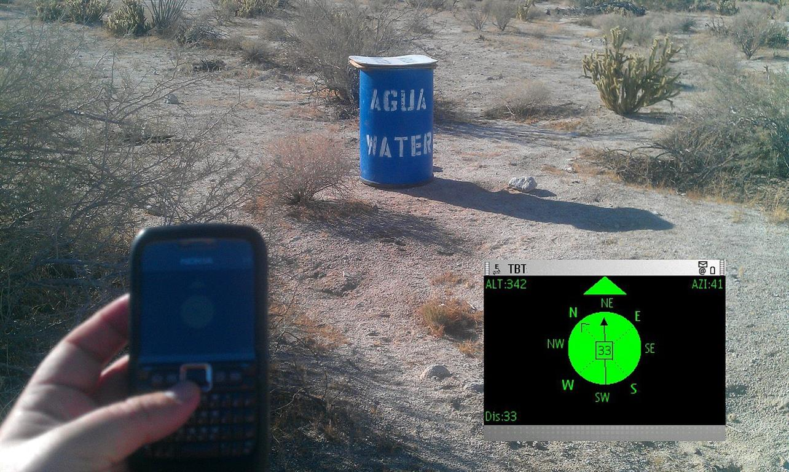
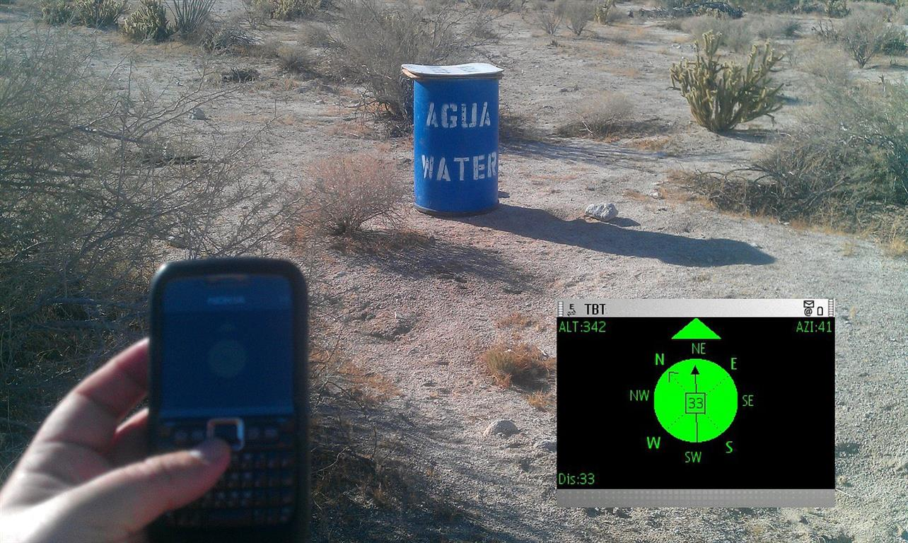

The Transborder Immigrant Tool was software that aided people crossing the US/Mexico border. TBT would guide immigrants to caches of water accompanied by motivational poems. The tool would face significant criticism from right-wing media and personalities, culminating in threats against members of EDT and an investigation by the FBI.
 
